Register
The register step of the pipeline finds an affine transform between
the reference round/reference channel (\(r_{ref}\)/\(c_{ref}\)) and each imaging round and channel for every tile.
The affine transform to tile \(t\), round \(r\), channel \(c\) is found through iterative closest point
using the shift, nb.register_initial.shift[t, r], found during the register_initial step of
the pipeline as the starting point. It is saved to the Notebook as nb.register.transform[t, r, c].
These transforms are used later in the pipeline to
determine the intensity of a pixel in each round and channel.
The register and register_debug
NotebookPages are added to the Notebook after this stage is finished.
Affine Transform
We want to find the transform from tile \(t\), round \(r_{ref}\), channel \(c_{ref}\) to round \(r\), channel \(c\) for all
tiles, rounds and channels such that there is pixel-level alignment between the images. The pixel-level
alignment is important because most spots are only a few pixels in size, so even a one-pixel registration error
can compromise the spot_colors found in the next stage of the pipeline
and thus the gene assignment.
The shifts found in the register_initial step of the pipeline are not sufficient for this, because of chromatic aberration which will cause a scaling between color channels. There may also be small rotational or non-rigid shifts; thus we find affine transformations which can include shifts, scalings, rotations and shears.
Starting Transform
The affine transforms are found using the iterative-closest point
(ICP) algorithm. This is highly sensitive to local maxima, so it is initialized with the shifts found in the
register_initial step, nb.register_initial.shift.
The starting transform to a particular round and tile is the same for all channels. The shifts are put into
the form of an affine transform (\(4 \times 3\) array) using the
transform_from_scale_shift function.
Starting transform from shifts
The code below indicates how the initial shifts (\(n_{tiles} \times n_{rounds} \times 3\) array) are converted into initial transforms (\(n_{tiles} \times n_{rounds} \times n_{channels} \times 4 \times 3\) array).
import numpy as np
from coppafish.register.base import transform_from_scale_shift
t_print = 1
r_print = 1
initial_shifts = nb.register_initial.shift # z shift is in z-pixel units
print(f"Initial shift for tile {t_print}, round {r_print}:\n{initial_shifts[t_print, r_print]}")
# Convert z shift into same units as yx pixels
initial_shifts = initial_shifts.astype(float)
z_scale = [1, 1, nb.basic_info.pixel_size_z / nb.basic_info.pixel_size_xy]
for t in nb.basic_info.use_tiles:
for r in nb.basic_info.use_rounds:
initial_shifts[t, r] = initial_shifts[t, r] * z_scale
print(f"Initial shift for tile {t_print}, round {r_print} (z shift in YX pixels):\n"
f"{np.around(initial_shifts[t_print, r_print], 2)}")
# Convert shifts to affine transform 4 x 3 form
initial_scale = np.ones((nb.basic_info.n_channels, 3)) # set all scalings to 1 initially
# as just want shift.
initial_transforms = transform_from_scale_shift(initial_scale, initial_shifts)
# Show transform different for rounds but same for channel within round
for r in range(2):
for c in range(2):
print(f"Initial transform for tile {t_print}, round {r}, channel {c}:\n"
f"{np.around(initial_transforms[t_print, r, c], 2)}")
Initial Shifts for tile 1, round 1:
[25 14 1]
Initial shift for tile 1, round 1 (z shift in YX pixels):
[25. 14. 5.99]
Initial transform for tile 1, round 0, channel 0:
[[ 1. 0. 0.]
[ 0. 1. 0.]
[ 0. 0. 1.]
[48. 30. 0.]]
Initial transform for tile 1, round 0, channel 1:
[[ 1. 0. 0.]
[ 0. 1. 0.]
[ 0. 0. 1.]
[48. 30. 0.]]
Initial transform for tile 1, round 1, channel 0:
[[ 1. 0. 0. ]
[ 0. 1. 0. ]
[ 0. 0. 1. ]
[25. 14. 5.99]]
Initial transform for tile 1, round 1, channel 1:
[[ 1. 0. 0. ]
[ 0. 1. 0. ]
[ 0. 0. 1. ]
[25. 14. 5.99]]
ICP
The pseudocode for the ICP algorithm to find the affine transform for tile \(t\) round \(r\), channel \(c\) is indicated below. The shape of the various arrays are indicated in the comments (#).
Preparing point clouds
Prior to the ICP algorithm, the \(yxz\) coordinates of spots on a tile are centered. This is because, it makes more sense to me, if any rotation is applied around the centre of the tile.
Also, like for the initial shifts, the z-coordinates must be converted into units of yx-pixels, so overall:
spot_yxz = spot_yxz - nb.basic_info.tile_centre # center coordinates
# Convert units of z-coordinates
z_scale = [1, 1, nb.basic_info.pixel_size_z / nb.basic_info.pixel_size_xy]
spot_yxz = spot_yxz * z_scale
For the non-reference point clouds we only keep spots which are isolated. This is because the ICP algorithm is less likely to fall into local maxima if the spots are quite well separated.
We deam a spot isolated
if the nearest spot to it is further away than 2 * neighb_dist.
Where neighb_dist = config['register']['neighb_dist_thresh_2d'] if 2D and
config['register']['neighb_dist_thresh_3d'] if 3D.
n_iter is the maximum number of iterations and is set by config['register']['n_iter'].
neighb_dist_thresh is the distance in \(yx\) pixels below which neighbours are a good match.
It is given by config['register']['neighb_dist_thresh_2d'] if 2D and
config['register']['neighb_dist_thresh_3d'] if 3D.
Only neighbours which are closer than this are used when computing the transform.
Padding ref_spot_yxz
ref_spot_yxz has shape [n_ref x 4] not [n_ref x 3] because to be able to be multiplied by
the affine transform ([4 x 3]), it must be padded with ones i.e. ref_spot_yxz[:, 3] = 1.
ref_spot_yxz @ transform is then the same as ref_spot_yxz[:, :3] @ transform[:3, :] + transform[3] i.e.
rotation/scaling matrix applied and then the shift is added.
spot_yxz = yxz coordinates for spots detected on tile t,
round r, channel c. # [n_base x 3]
ref_spot_yxz = padded yxz coordinates for spots detected on tile t,
reference round, reference channel. # [n_ref x 4]
transform_initial = starting transform for tile t, round r, channel c.
transform = transform_initial # [4 x 3]
neighb_ind = zeros(n_ref) # [n_ref]
neighb_ind_last = neighb_ind # [n_ref]
i = 0
while i < n_iter:
1. Transform ref_spot_yxz according to transform to give
ref_spot_yxz_transform. # [n_ref x 3]
This is just matrix multiplication.
2. neighb_ind[s] is index of spot in spot_yxz closest to
ref_spot_yxz_transform[s].
3. dist[s] is the distance between spot_yxz[neighb_ind[s]]
and ref_spot_yxz_transform[s] # [n_ref]
4. Choose which spots to use to update the transform:
use = dist < neighb_dist_thresh
spot_yxz_use = spot_yxz[neighb_ind[use]] # [n_use x 3]
ref_spot_yxz_use = ref_spot_yxz[use] # [n_use x 4]
5. Update transform to be the 4x3 matrix which multiplies ref_spot_yxz_use
such that the distances between the transformed spots
and spot_yxz_use are minimised. This is the least squares solution.
6. If neighb_ind and neighb_ind_last are identical, then stop iteration
i.e. i = n_iter.
7. neighb_ind_last = neighb_ind
8. i = i + 1
Checking ICP results
Once the ICP algorithm has obtained a transform, transform[t, r, c] for each tile, round and channel,
we want to determine if they are acceptable. Three criteria must be satisfied for
transform[t, r, c] to be considered acceptable:
- Number of matches exceeds threshold
- Diagonal elements of
transform[t, r, c]are near to what we broadly expect them to be. - Shift part of
transform[t, r, c]i.e.transform[t, r, c][3]is near to what we broadly expect it to be.
Number of matches
The number of matches, n_matches[t, r, c],
are the number of pairs of spots used to compute transform[t, r, c], i.e.
n_use in the above pseudocode, and thus it depends on the neighb_dist_thresh parameter.
The number of matches are saved to the Notebook as nb.register_debug.n_matches[t, r, c].
transform[t, r, c] is deemed to have failed if n_matches[t, r, c] < n_matches_thresh[t, r, c].
n_matches_thresh[t, r, c] is computed as follows:
# n_ref[t] - number of spots detected on tile t,
# reference round, reference channel
# n_base[t, r, c] - number of spots detected on tile t,
# round r, channel c
# Set threshold to be fraction of max possible n_matches
n_matches_thresh[t, r, c] = thresh_fract * min(n_ref[t], n_base[t, r, c])
# Clip threshold between min and max
if n_matches_thresh[t, r, c] < thresh_min:
n_matches_thresh[t, r, c] = thresh_min
if n_matches_thresh[t, r, c] > thresh_max:
n_matches_thresh[t, r, c] = thresh_max
Where:
thresh_fract = config['register']['matches_thresh_fract]. Default: 0.25thresh_min = config['register']['matches_thresh_min]. Default: 25thresh_max = config['register']['matches_thresh_max]. Default: 300
The default are parameters are such that in most cases, n_matches_thresh[t, r, c] = thresh_max so
we require more than 300 matches for a transform to be acceptable.
The thresholds are saved to the Notebook as nb.register_debug.n_matches_thresh[t, r, c].
Chromatic Aberration
Our expectation of the transforms found is that there should be a scaling factor to correct for chromatic aberration between color channels. We do not expect significant scaling between rounds or tiles though.
Thus, we can compute the expected scaling for each transform to channel \(c\) by averaging over all tiles and rounds. We also avoid transforms which have failed based on their matches.
# transforms: [n_tiles x n_rounds x n_channels x 4 x 3]
import numpy as np
failed = n_matches < n_matches_thresh # [n_tiles x n_rounds x n_channels]
scaling = transforms[:, :, :, np.arange(3), np.arange(3)] # [n_tiles x n_rounds x n_channels x 3]
scaling = np.moveaxis(scaling, -1, 0) # [3 x n_tiles x n_rounds x n_channels]
failed = np.expand_dims(failed, 0).repeat(3, 0) # [3 x n_tiles x n_riounds x n_channels]
scaling[failed] = np.nan # don't use failed t/r/c in average
# Use median to take average as to avoid outlier values
av_scaling = np.nanmedian(scaling, axis=[1, 2]) # average over tiles and rounds
av_scaling = np.moveaxis(av_scaling, 0, -1) # [n_channels x 3]
print(av_scaling)
[[0.99863349 0.99863439 1. ]
[1.001767 1.00164772 1. ]
[1.00026354 1.00017105 1. ]
[1.00129138 1.00123909 1. ]
[1.00002731 0.99993372 1. ]
[0.99826052 0.99822415 1. ]
[0.99554262 0.99556903 1. ]]
This gives us av_scaling[c, i] which is the scale factor for channel \(c\) in dimension \(i\) (order is \(yxz\)).
This is saved to the Notebook as nb.register_debug.av_scaling.
From the Output above, there is a clear difference between channels, as we expect. Also, the \(y\) and \(x\) scaling
for a particular channel tend to be very similar but the \(z\) scaling is always 1. This is because the z-pixels
are larger than the yx-pixels so there are no two pixels very close in \(z\).
transform[t, r, c] is deemed to have failed if the scaling is significantly different from av_scaling[c]
as quantified by:
np.abs(transform[t, r, c][i, i] - av_scaling[c, i]) > scale_thresh[i] for any dimension \(i\).
Here, scale_thresh is config['register']['scale_dev_thresh']. The default value
of [0.01, 0.01, 0.1] is
intended to be quite hard to exceed i.e. only really awful scaling will fail in this way. The \(z\) threshold
is larger because if there is scaling in \(z\), you would expect larger variance because the \(z\)-pixels are larger
than the \(yx\)-pixels (this may need looking at though, I am not too sure about it, but I think I made it
larger because quite a lot of transforms were failing based on the z-scaling).
Shift
Our expectation of the transforms found is that there should be a shift between rounds for a particular tile (in register_initial we expected the shift to a particular round should be quite similar across tiles - we relax that here). We do not expect significant shifts between channels for the same tile and round though.
Thus, we can compute the expected shift for each transform of tile \(t\) to round \(r\) by averaging over all channels. We also avoid transforms which have failed based on their matches or scaling.
# transforms: [n_tiles x n_rounds x n_channels x 4 x 3]
import numpy as np
failed = np.logical_or(failed_matches, failed_scale) # [n_tiles x n_rounds x n_channels]
shifts = np.moveaxis(transforms[:, :, :, 3], -1, 0) # [3 x n_tiles x n_rounds x n_channels]
failed = np.expand_dims(failed, 0).repeat(3, 0) # [3 x n_tiles x n_rounds x n_channels]
shifts[failed] = np.nan # don't use failed t/r/c in average
# Use median to take average as to avoid outlier values
av_shifts = np.nanmedian(shifts, axis=3) # average over channels
av_shifts = np.moveaxis(av_shifts, 0, -1) # [n_tiles x n_rounds x 3]
print(np.around(av_shifts[:4, :3,:], 2))
[[[35.79 24.04 0. ]
[14.49 9.23 -0. ]
[-2.25 -2.43 5.99]]
[[47.74 30.01 0. ]
[25.26 13.78 5.99]
[10.35 4.43 -0. ]]
[[52.54 36.04 0. ]
[32.24 21.99 5.99]
[16.64 11.6 5.99]]
[[57.75 38.31 -5.99]
[38.57 27.41 -0. ]
[26.15 16.23 0. ]]]
This gives us av_shifts[t, r, i] which is the average shift for tile \(t\), round \(r\) in dimension \(i\) (order is \(yxz\)).
This is saved to the Notebook as nb.register_debug.av_shifts. From the first 4 tiles and 3 rounds printed in
Output above, we see that for a given round, there is significant variance across tiles
(note that the z-shift is in units of \(yx\)-pixels, 5.99 in these units is 1 in z-pixels).
Systematic shift between tiles
In the above Output, there seems to be a systematic shift between tiles:
- The \(y\) shifts for tile 1 for all rounds seem to be approximately equal to the tile 0 shifts + 11.
- The \(x\) shifts for tile 1 for all rounds seem to be approximately equal to the tile 0 shifts + 6.
- The \(y\) shifts for tile 2 for all rounds seem to be approximately equal to the tile 1 shifts + 6.
- The \(x\) shifts for tile 2 for all rounds seem to be approximately equal to the tile 1 shifts + 7.
- The \(y\) shifts for tile 3 for all rounds seem to be approximately equal to the tile 2 shifts + 5.
- The \(x\) shifts for tile 3 for all rounds seem to be approximately equal to the tile 2 shifts + 5.
- The \(z\) shifts for tile 3 for all rounds seem to be approximately equal to the tile 2 shifts - 5.99.
I am not sure if this is seen in all experiments but if it is, it may be useful to incorporate it into the code, both here and in the register initial section.
transform[t, r, c] is deemed to have failed if the shift is significantly different from av_shifts[t, r]
as quantified by:
np.abs(transform[t, r, c][3, i] - av_shifts[t, r, i]) > shift_thresh[i] for any dimension \(i\).
Here, shift_thresh is config['register']['shift_dev_thresh']. The default value
of [15, 15, 5] is
intended to be quite hard to exceed i.e. only really awful shifts will fail in this way.
config['register']['shift_dev_thresh'][2] is in units of z-pixels and is converted to \(yx\)-pixels before
applying the thresholding (the default value of 5 will become 29.95 for our examples).
Error - average transform
When computing av_shifts[t, r],
we require that for tile \(t\), round \(r\), at least one channel has not failed
based on matches or scaling. If they have all failed,
it cannot be computed and an error will be raised indicating the problematic tile/round pairs.
If this error occurs, it is probably worth using the diagnostics to see why registration
produces few matches or bad scaling for these tile/round pairs.
If it seems to be a single tile or round that is the problem, it may be worth removing it from
use_tiles/use_rounds and re-running.
When computing av_scaling[c],
we require that for channel \(c\), at least one round and tile has not failed
based on matches. If they have all failed,
it cannot be computed and an error will be raised indicating the problematic channels.
As \(n_{tiles} \times n_{rounds} > n_{channels}\), this error is less likely to occur, but if it does, it
is probably worth removing the indicated channels from use_channels and
re-running.
Regularized ICP
For the transforms which failed (those for which nb.register_debug.failed[t, r, c] == True),
we save the failed transform as nb.register_debug.transform_outlier[t, r, c].
We then re-run ICP to compute a new transform.
This time, though we want to ensure that transform[t, r, c] is pretty close to the av_transform[t, r, c].
av_transform
av_transform[t, r, c] is the expected transform for tile \(t\), round \(r\), channel \(c\).
It is assumed to have no rotation, a scaling consistent with acceptable transforms to channel \(c\)
and a shift consistent with acceptable transforms for tile \(t\) to round \(r\).
The Output below shows the average transform for tile 1, round 0, channel 0 using the
av_scaling and av_shifts produced in the earlier sections.
av_transform = np.zeros((n_tiles, n_rounds, n_channels, 4, 3))
for t in use_tiles:
for r in use_rounds:
for c in use_channels:
av_transform[t, r, c, 3] = av_shifts[t, r]
for i in range(3):
av_transform[t, r, c, i, i] = av_scaling[c, i]
print(np.around(av_transform[1, 0, 0], 5))
[[ 0.99863 0. 0. ]
[ 0. 0.99863 0. ]
[ 0. 0. 1. ]
[47.73948 30.00533 0. ]]
To do this, we set the initial transform for transform[t, r, c] to be av_transform[t, r, c].
The ICP algorithm is then the same as in the pseudocode except for section 5.
For normal least squares, we are finding the \(4\times3\) transform \(M\),
such that the following loss function is minimised:
Where:
- \(n_{neighb}\) is
n_useintroduced in step 4 of the pseudocode. - \(y_s\) is
spot_yxz_use[s]introduced in step 4 of the pseudocode (\(n_{neighb} \times 3\)) - \(x_s\) is
ref_spot_yxz_use[s]introduced in step 4 of the pseudocode (\(n_{neighb} \times 4\))
To keep \(M\) close to the average transform, \(M_a\), we find \(M\) through regularized least squares which minimises the following loss function:
Where:
- \(D_{scale}^2 = \sum_{i=0}^2\sum_{j=0}^2(M_{ij} - M_{a_{ij}})^2\) is the squared
distance between
transform[:3, :]andav_transform[:3, :]i.e. between the rotation/scaling \(3\times3\) matrix part of the transforms. - \(D_{shift}^2 = \sum_{j=0}^2(M_{3j} - M_{a_{3j}})^2\) is the squared
distance between
transform[3]andav_transform[3]i.e. between the shift part of the transforms. - \(\lambda\) is
config['register']['regularize_constant']. Default: 500 - \(\mu\) is
config['register']['regularize_factor']. Default: \(5\times10^4\)
Implementing regularized least squares in python
Lets suppose we are doing normal least squares with \(n_{neighb} = 4\),
Then the least squares solution for \(M\) will be the one which minimises the loss function:
This matches the additional term in the regularised least squares loss function if:
Hence in python,
we append to the \(y\) array containing spot_yxz_use the form of y here so
it now has shape \((n_{neighb}+4) \times 3\). We also append to the \(x\) array containing
ref_spot_yxz_use the form of x here so it now has shape \((n_{neighb}+4) \times 4\).
If we then just do normal least squares (np.linalg.lstsq(x, y)) on these modified \(y\) and \(x\) arrays,
we get the regularized least squares solution for \(M\).
The intuition for suitable values of \(\lambda\) and \(\mu\) comes from the following:
- The desired distance between the shift found and the target shift, \(D_{shift}\), is the equal to the average distance between neighbouring spots (the average of \(D_s\)).
- If \(\lambda = n_{neighb}\), the contribution of the two terms in the loss function will then be equal if \(\mu = D_{shift}^2/D_{scale}^2\) (in this case, regularised term is \(n_{neighb}D_{shift}^2\) but \(D_{shift}^2\) is average of \(D_s^2\) so this is equivalent to \(\sum_{s=0}^{n_{neighb}-1} D_{s}^2\)).
-
A typical value of \(D_s\) is 2 (must be below
neighb_dist_thresh) and a typical target value of \(D_{scale}\) is 0.009 hence \(\mu = 2^2/0.009^2 \approx 5\times10^4\).The larger \(\mu\), the more the regularization will affect the scaling/rotation at the expense of the shift.
-
Regularised term dominates the loss function if \(\lambda > n_{neighb}\) so that as \(\lambda \rightarrow \infty\), \(M \rightarrow M_a\). Regularised term has little effect if \(\lambda < n_{neighb}\) such that \(M\) tends to the normal least squares solution as \(\lambda \rightarrow 0\).
Hence, the value of \(\lambda\) should be thought of as an \(n_{neighb}\) threshold. If there are more neighbours than \(\lambda\) used to determine \(M\) then we trust that this is enough to get the correct transform. If there are less than \(\lambda\) neighbours used, we don't think this is enough to trust the transform it would produce freely, so we restrict the value of \(M\) produced to be near the expected \(M_a\).
Typically, 500 neighbours is quite a good value,
config['register']['regularize_constant']should always be larger thanconfig['register']['matches_thresh_max'].
view_icp_reg
The function view_icp_reg is also useful for investigating
the effect of \(\lambda\) and \(\mu\).
It is very similar to view_icp but view_icp_reg(t, r, c, reg_constant=[lambda1, lambda2],
reg_factor=[mu1, mu2])
will have blue point clouds corresponding to:
- Reference: Reference (\(r_{ref}\)/\(c_{ref}\)) point cloud for tile \(t\) with no transform applied.
- \(\lambda=0\): Reference point cloud transformed according to transform found with no regularization.
- \(\lambda=\infty\): Reference point cloud transformed according to target transform for regularization, \(M_a\).
This is found from
av_scaling[c]andav_shifts[t, r]unless it is provided. - \(\lambda=\)
lambda1, \(\mu=\)mu1: Reference point cloud transformed according to transform found with regularized ICP usinglambda1andmu1as the regularization parameters. - \(\lambda=\)
lambda2, \(\mu=\)mu2: Reference point cloud transformed according to transform found with regularized ICP usinglambda2andmu2as the regularization parameters.
If reg_constant and reg_factor are not provided, config['register']['regularize_constant'] and
config['register']['regularize_factor'] will be used.
The example below shows the point clouds produced after running
view_icp_reg(0, 1, 0, reg_constant=[3e4], reg_factor=[1e6]):
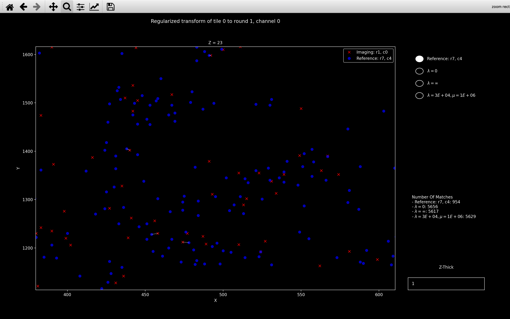
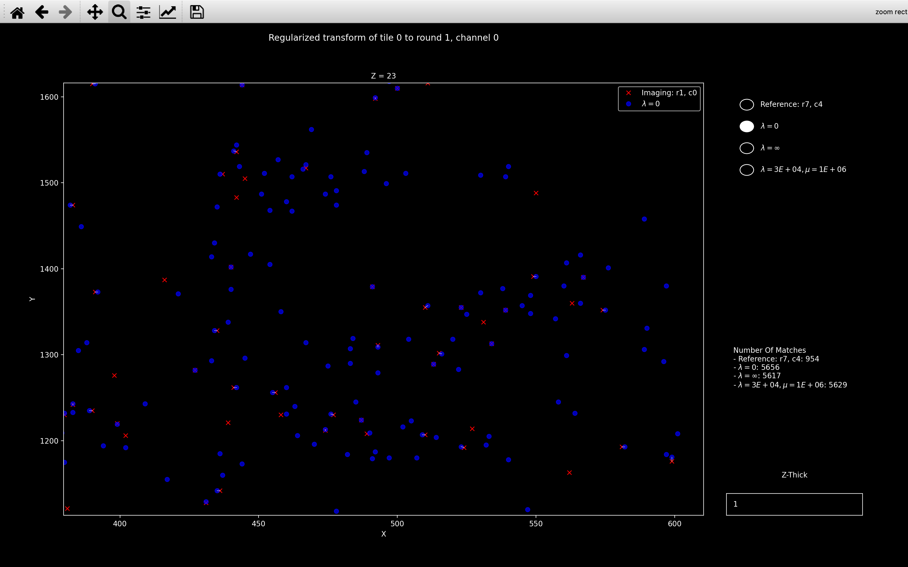
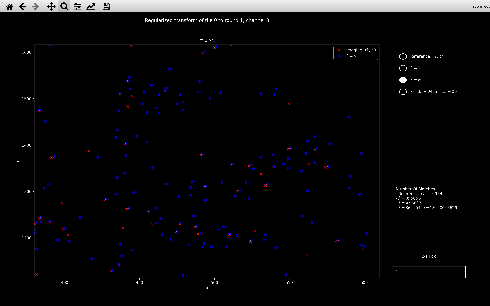
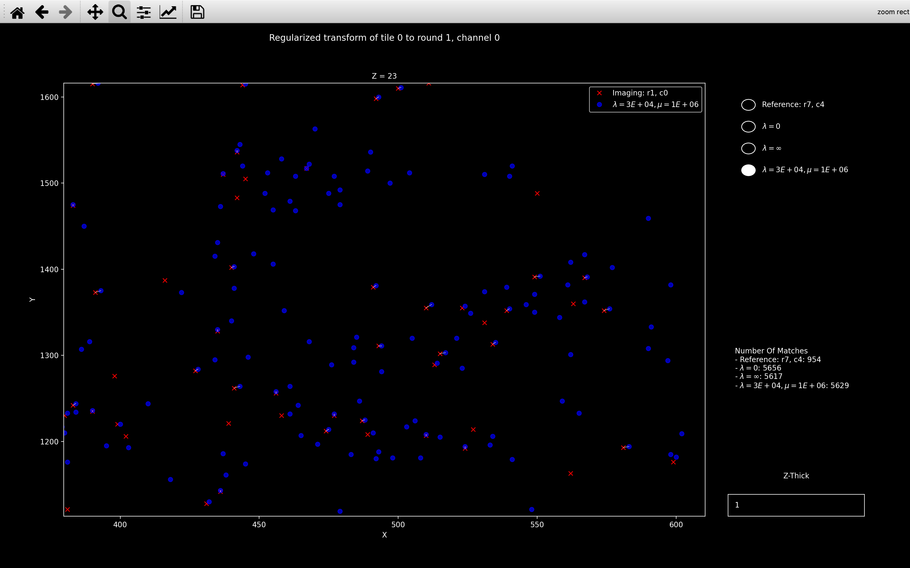
Here we see that all the transforms are visibly different but the \(\lambda=30000, \mu=1\times10^6\) case is closer to \(\lambda=\infty\) than \(\lambda=0\). This makes sense because as shown in the right sidebar of the plots, the number of matches is about 5600 so \(\lambda = 30000 > n_{neighb}\) so the final transform should be close to the target transform we are regularising towards.
If view_icp_reg is run with plot_residual=True, it produces
another plot which indicates how \(D_{shift}\) and \(D_{scale}\) vary with different values of reg_constant
and reg_factor.
view_icp_reg(nb, 0, 1, 0, reg_constant=np.logspace(0, 7, 8), reg_factor=[5e4]*8, plot_residual=True)
produces the following additional plot:
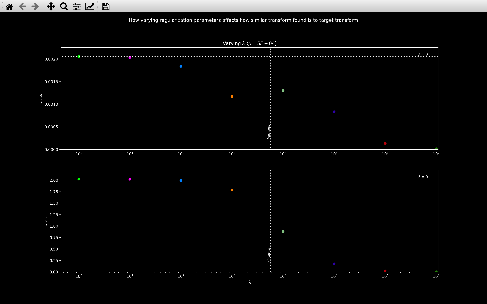
Here, each colored marker refers to a different \(\lambda/\mu\) combination. The \(\lambda=0\) horizontal line indicates the values with no regularisation and the \(n_{matches}\) line indicates the number of matches found with \(\lambda=\infty\).
This plot nicely shows that for \(\lambda < n_{matches}\), the transform found is pretty close to the normal least squares solution but for \(\lambda > n_{matches}\), it is closer to the target transform we are regularising towards.
view_icp_reg(nb, 0, 1, 0, reg_constant=[500] * 8, reg_factor=np.logspace(2, 9, 8), plot_residual=True)
produces the following additional plot:
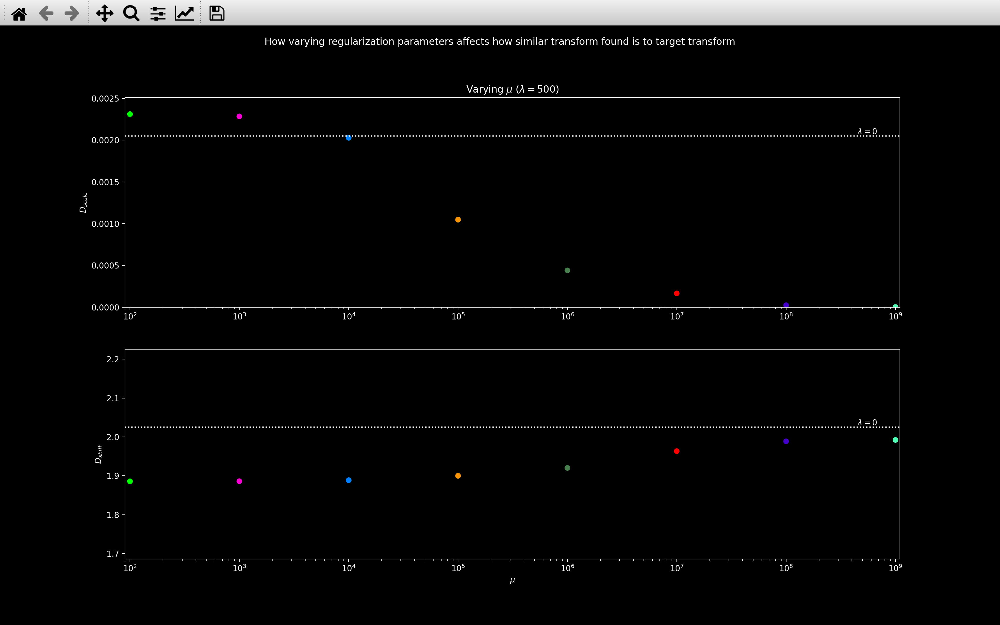
This shows that varying \(\mu\) while keeping \(\lambda\) constant does not affect \(D_{shift}\) much but \(D_{scale}\) does decrease as \(\mu\) increases.
Error - too few matches
After the call reference spots step,
check_transforms
will be run.
This will produce a warning for any tile, round, channel for which
nb.register_debug.n_matches < nb.register_debug.n_matches_thresh
An error will be raised if any of the following is satisfied:
-
For any given channel, the number of transforms with
n_matches < n_matches_threshexceedserror_fraction.The faulty channels should then be removed from
use_channels. -
For any given tile, the number of transforms with
n_matches < n_matches_threshexceedserror_fraction.The faulty tiles should then be removed from
use_tiles. -
For any given round, the number of transforms with
n_matches < n_matches_threshexceedserror_fraction.The faulty rounds should then be removed from
use_rounds.
error_fraction is given by config['register']['n_transforms_error_fraction].
Debugging
There are a few functions using matplotlib which may help to debug this section of the pipeline.
view_affine_shift_info
The view_affine_shift_info function
plots the shift part of the affine transform (nb.register.transform[t, r, c, 3]) to
all tiles of a given round and channel on the same plot
(there are 3 plots for each round and channel).
It also includes a plot of nb.register_debug.n_matches vs nb.register_debug.error for each round and channel.
The error is the root-mean-square distance between neighbours used to compute the transform. Thus, the lower
this value, and the higher \(n_{matches}\), the better the transform.
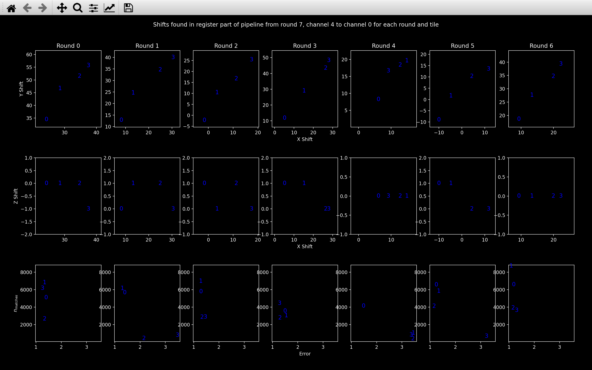
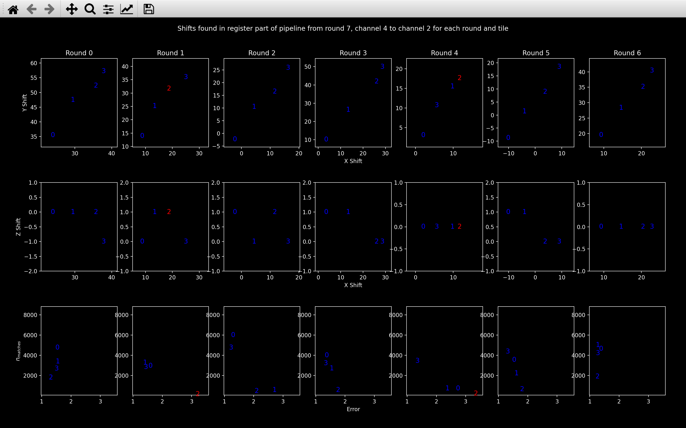
The channel shown is changed by scrolling with the mouse and as a sanity check, we do not expect the top two plots to vary much when the channel changes (the round 0 shifts above is quite a good example).
The numbers refer to the tile, and they are blue if
nb.register_debug.n_matches[t, r, c] > nb.register_debug.n_matches_thresh[t, r, c].
Otherwise, they are red, as with tile 2 in round 1 and 4 of the channel 2 plots.
As with view_register_shift_info, this function
can also be used to show nb.register_debug.transform_outlier[t, r, c, 3] by setting outlier=True, although
the bottom plot will always show nb.register_debug.n_matches vs nb.register_debug.error.
scale_box_plots
This function produces two or three plots, one for each dimension. In plot \(i\), there is a boxplot
for each round and channel of nb.register.transform[:, r, c, i, i]:
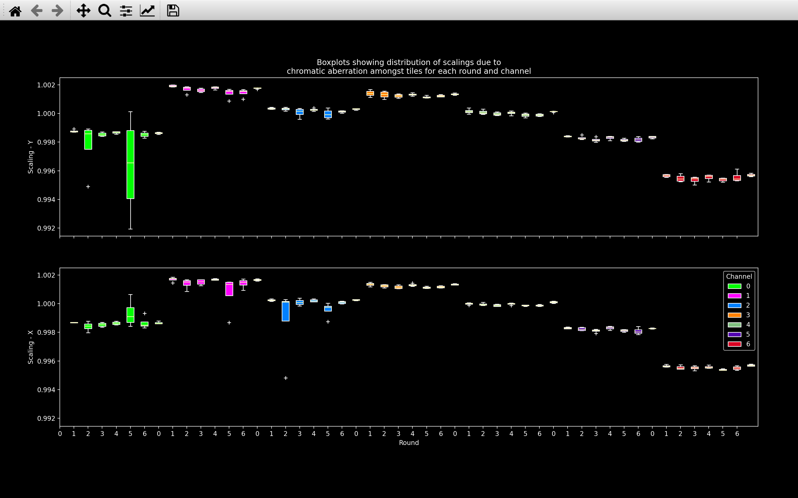
In this plot, we expect for a given channel, the scaling should be similar across all rounds and tiles (i.e. boxplots of the same color should be at the same height, and they should have quite small ranges with any outlier tiles (white crosses, +) not far from the boxplot). Also, we expect the Scaling - Y and Scaling - X to be very similar. Scaling - Z will likely be different, but it won't be shown if the range of Scaling - Z is less than 0.00001, which usually the case.
view_icp
This is similar to view_stitch_overlap.
view_icp(nb, t, r, c)
will always show the local coordinates of the point cloud for tile \(t\), round \(r\), channel \(c\) in red.
This is spot_yxz in the psuedocode.
There are then buttons to select which reference point cloud for tile \(t\), round \(r_{ref}\), channel \(c_{ref}\) is plotted in blue:
- No transform: This is the reference point cloud with no transform applied
(
ref_spot_yxzin the psuedocode). - Shift: This is the reference point cloud, shifted according to
nb.register_initial.shifts[t, r](ref_spot_yxz_transformcomputed in the first iteration in the psuedocode) - Affine: This is the reference point cloud, transformed according to
nb.register.transform[t, r, c](ref_spot_yxz_transformcomputed in the last iteration in the psuedocode)
An example is shown below:
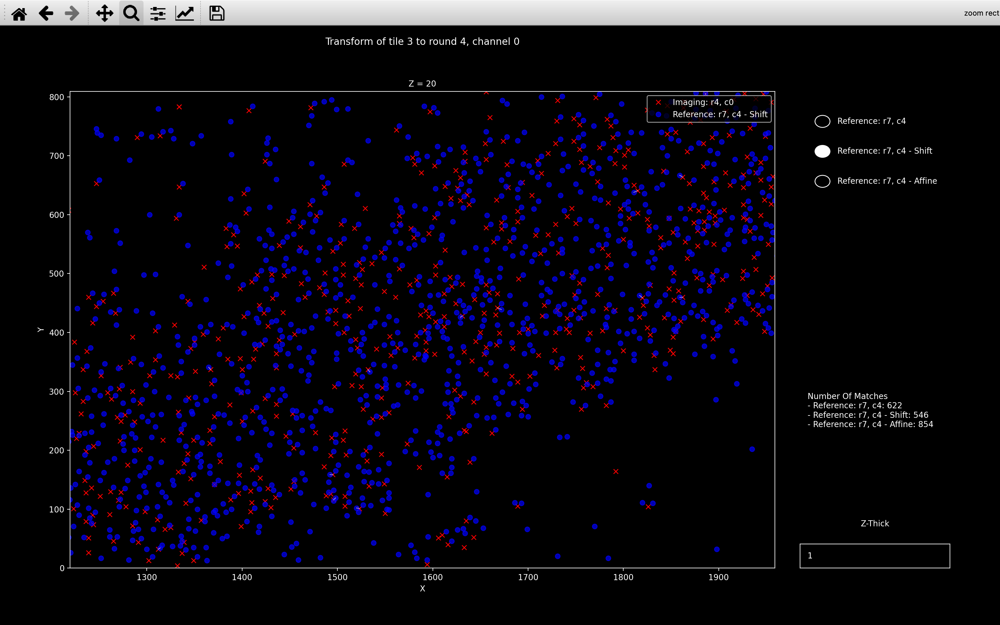
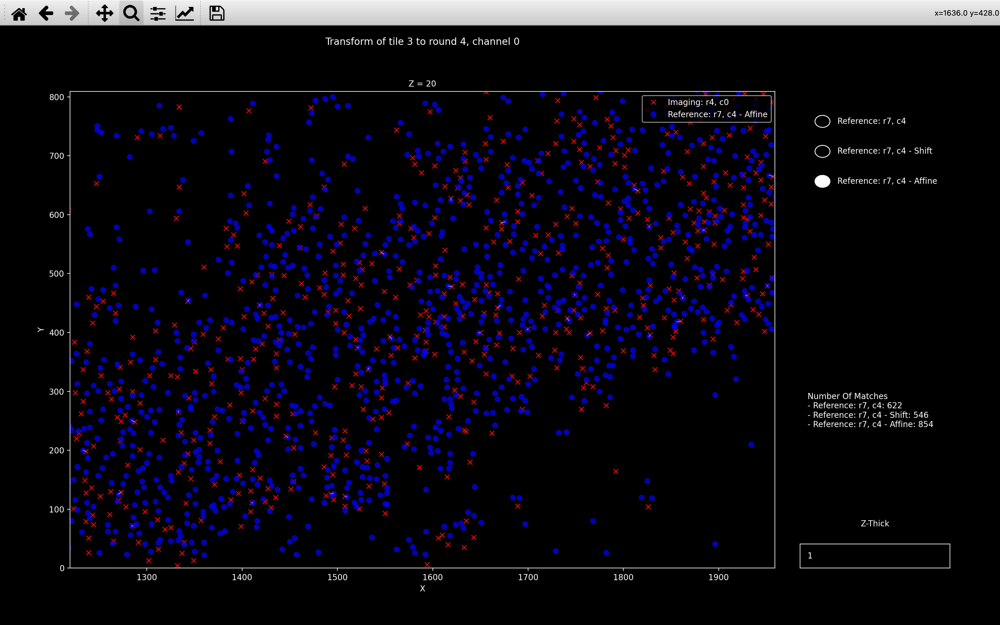
If regularized ICP was required for the chosen tile/round/channel, an additional button
will be present titled Regularized. The Affine button will then indicate
the reference point cloud, transformed according to nb.register_debug.transform_outlier (i.e. with no regularization).
The Regularized button will indicate the reference point cloud, transformed according to
nb.register.transform[t, r, c] (i.e. final transform found with regularization).
Can I use view_icp before running the register stage of the pipeline?
The view_icp function can be used after the find_spots
page has been added to the Notebook.
In the case where the Notebook does not have the
register_initial page, the shift will be computed. In the case where the Notebook does not have the
register page, the affine transform will be
computed with no regularization.
Psuedocode
This is the pseudocode outlining the basics of this step of the pipeline. For more detailed pseudocode about how the transform is found, see the ICP section.
r_ref = reference round
c_ref = reference round
spot_yxz[t, r, c] = yxz coordinates for spots detected on tile t,
round r, channel c.
for t in use_tiles:
Center reference point cloud:
spot_yxz[t, r_ref, c_ref] = spot_yxz[t, r_ref, c_ref] - tile_centre
Convert z coordinate into yx-pixels:
spot_yxz[t, r_ref, c_ref][:, 2] = spot_yxz[t, r_ref, c_ref][:, 2] * z_scale
for r in use_rounds:
for c in use_channels:
Center point cloud:
spot_yxz[t, r, c] = spot_yxz[t, r, c] - tile_centre
Convert z coordinate into yx-pixels:
spot_yxz[t, r, c][:, 2] = spot_yxz[t, r, c][:, 2] * z_scale
Only keep spots whose nearest neighbour is far
spot_yxz[t, r, c] = spot_yxz[t, r, c][isolated]
Find transform between spot_yxz[t, r_ref, c_ref] and
spot_yxz[t, r, c] using ICP.
Compute av_scaling and av_shift.
transforms[t, r, c] is failed if one of the following is satisfied:
- n_matches < n_matches_thresh.
- transforms[t, r, c][i, i] significantly different to av_scaling[c, i] for any i.
- transforms[t, r, c][3, i] significantly different to av_shift[t, r, i] for any i.
For failed transforms, recompute transform between
spot_yxz[t, r_ref, c_ref] and spot_yxz[t, r, c]
using regularized ICP.
Add transform to register NotebookPage.
Add debugging information to register_debug NotebookPage.
Add register and register_debug NotebookPages to Notebook.